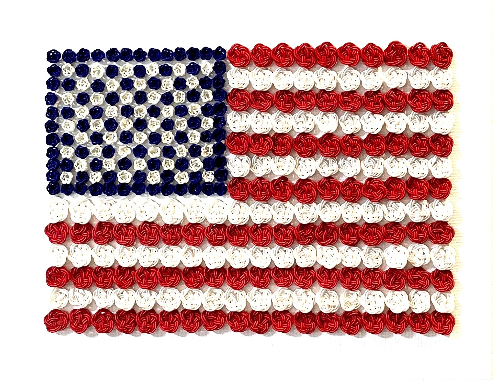
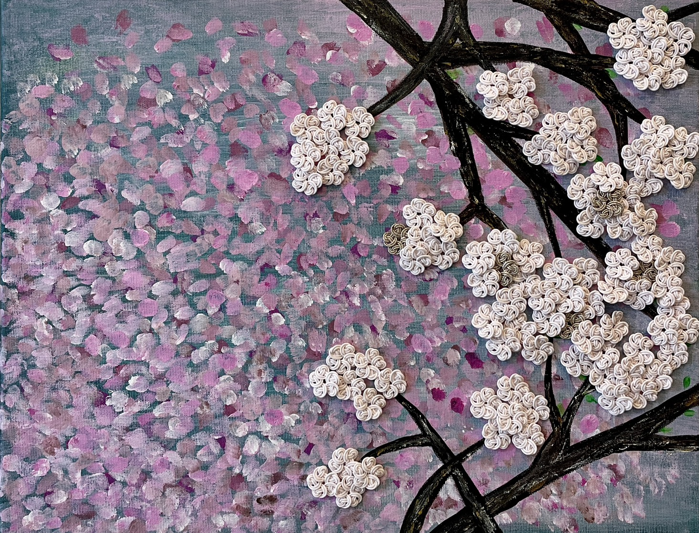
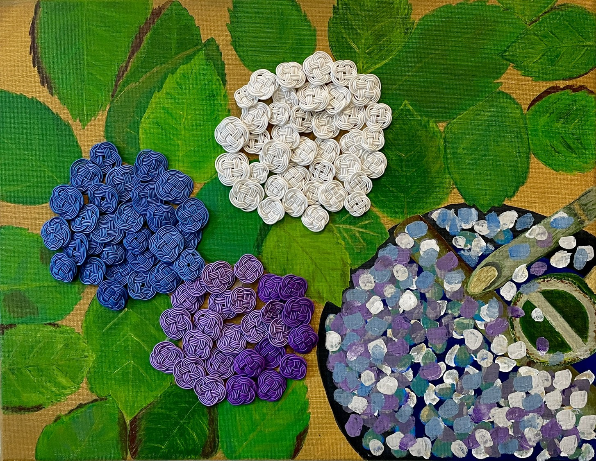
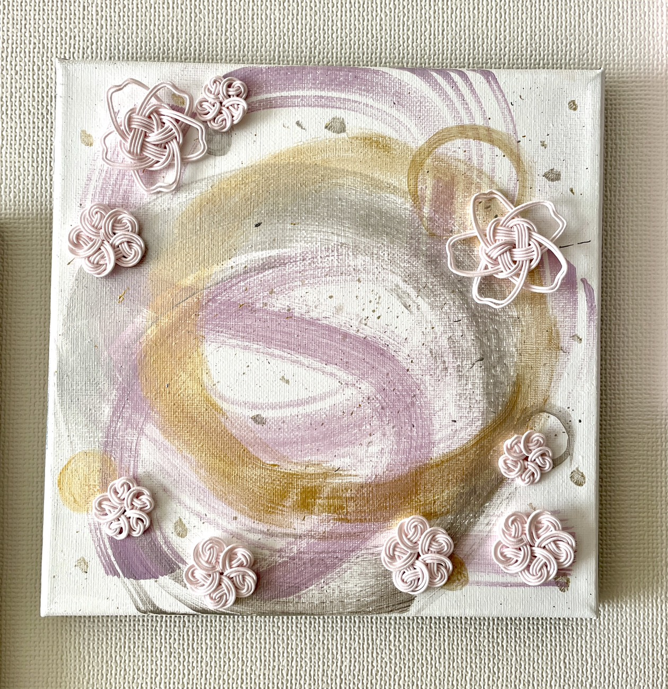
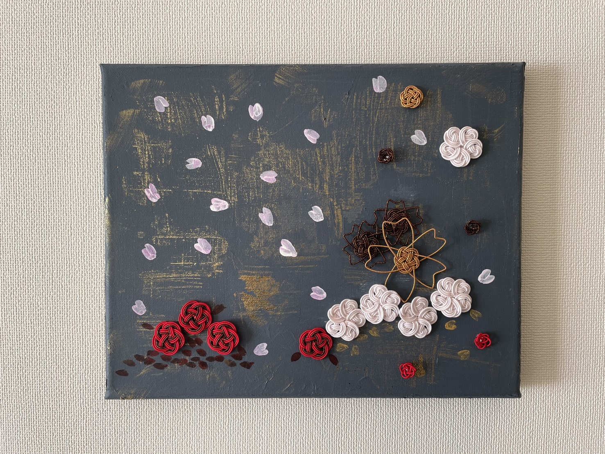
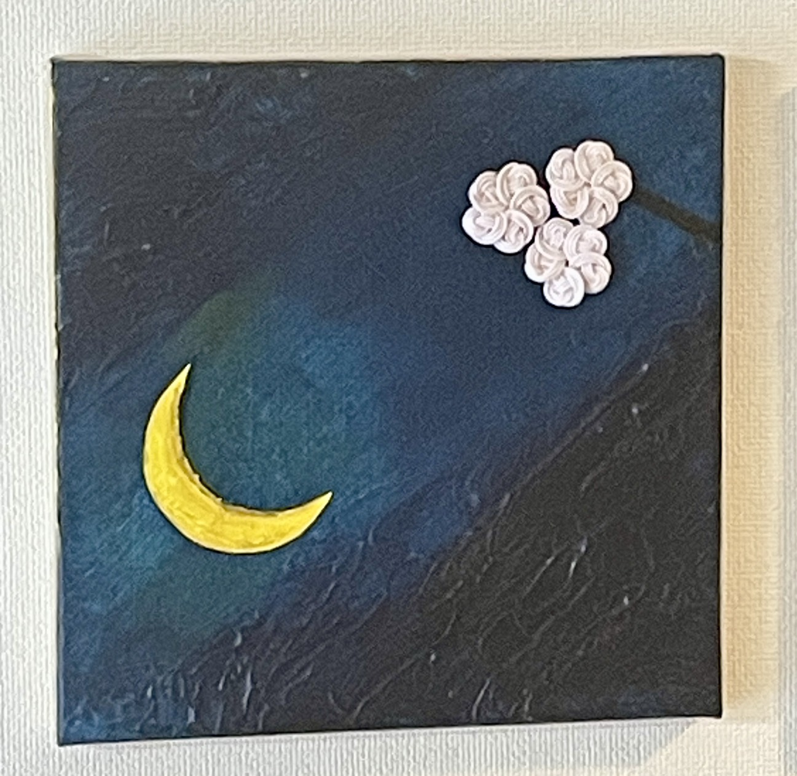
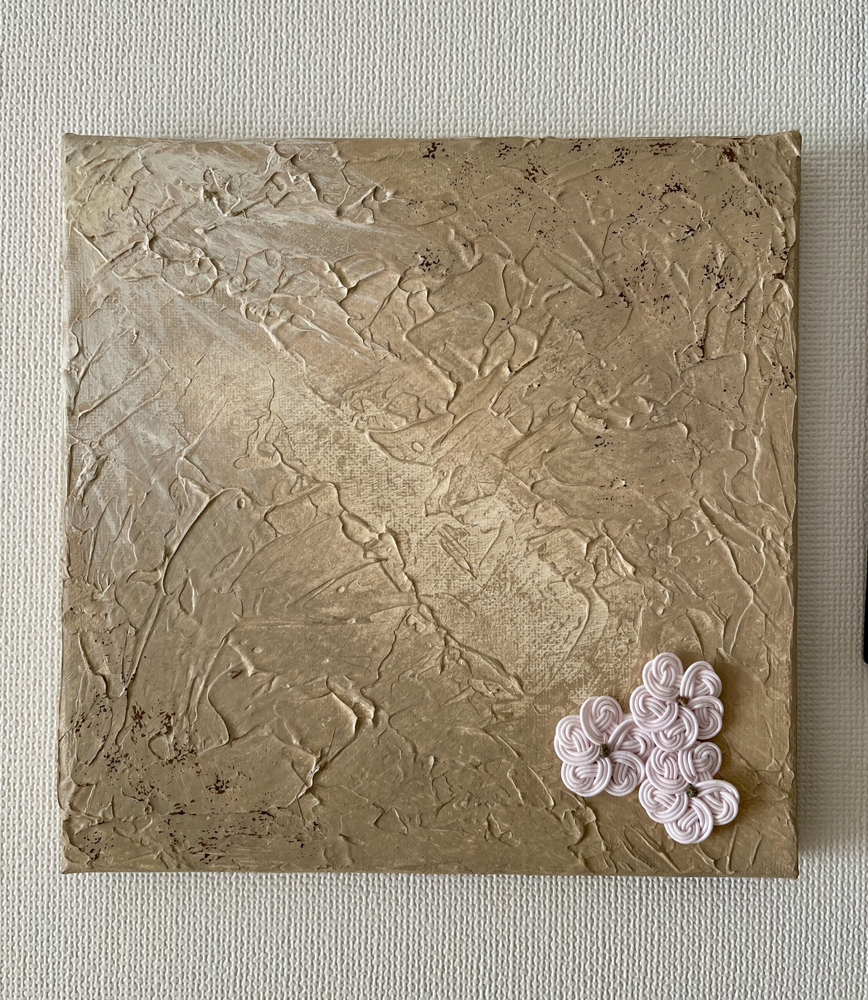

大阪出身。幼少期から色彩へのこだわりが強く、身にまとう衣服の生地やパーツも自ら選ぶ子供だった。27歳でメイク、28歳でパーソナルカラーを学ぶ。
2001年、スキンケアとメイクを学ぶためNYへ留学。現地で9.11を経験する。悲しみの中、人種を超えて手を取り合い、絆を結び直す人々の姿は人生の原点となった。
無数の水引花で描いた「星条旗」は、この原点への敬意と、日本文化を融合（Cultural Fusion）させた作品である。これを機に、結びのアートで人と人のつながりを表現し、心を結ぶ架け橋となることを決意した。
初めて訪れて以来約30年間、NYを思い出さない日は一日もない。そんな中、2022年にJCATと出会い道標を得る。2023年からはチェルシーでの展示会に出展。伝統と現代、NYの躍動と日本の美意識を行き来しながら、唯一無二の表現を紡ぎ続けている。

No.1（桜）
惜春の刻
Lingering Spring: A Moment of Wabi-Sabi
Size: 16.14×12.52×0.6 (inch)

No.2（紫陽花）
古金の寂（さび）、添水に散る名残の花
Gold of Antiquity: Fading Blooms in the Souzu Fount
Size: 16.14×12.52×0.6 (inch)

No.3（丸）
連桜の円（れんおうのまどか）
Bloom in Unity
Size: 7.9×7.9×0.6 (inch)

No.4（梅と桜）
浪漫の風
Gleaming Breezes of Spring

No.5（ネイビー）
宵の緒ー朧夜の結び
The Moon's Knot: Ties in the Twilight
Size: 7.9×7.9×0.6 (inch)

No.6（ベージュ）
移ろい、残る。
Fading Grace
Size: 7.9×7.9×0.6 (inch)
掲載記事
●●●● の作品と想いが紹介されました